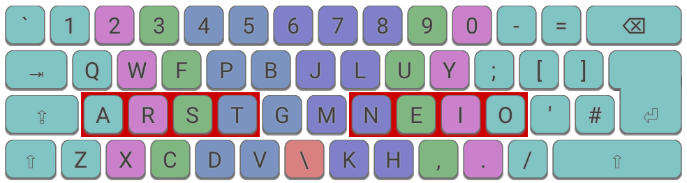
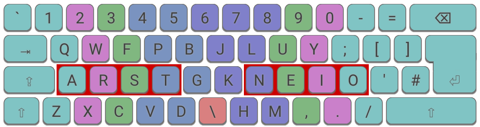
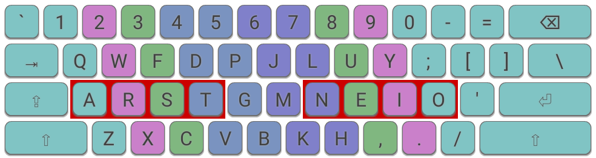

DH mods, or Curl Mods, are specific to the Colemak layout, although their underlying principle may be extended to other layouts. Their aim is to deprioritize the centre columns of the "home row" as these feel much less comfortable to many typists, and instead favour the lower-row positions reachable by a relaxed curling of the index fingers while keeping the wrists straight.
Criticisms of the straight home row in the standard Colemak layout have led to the generation of some alternative layouts that may be inferior in other respects. In the case of Colemak, the two home-row centre column keys are frequently typed keys, D and H, so applying such a mod provides an improved experience for these letters, with some benefit for G also.
See the Colemak Mod-DH pages for a more full description.

SteveP's original Colemak Mod-DH on an ISO keyboard. This layout is also known as Curl-DvbgHm after the keys that change from standard Colemak.

DreymaR's lighter DH mod on an ISO keyboard. This layout is also known as Curl-DbgHk after the keys that change from standard Colemak.

An alternative light DH mod applying Dpg and Hm switches. The benefit to D is not as great, but as it avoids the requirement to apply the Angle Mod, might be preferred by some ANSI keyboard users.
Note: An important principle observed by these mods is that any key moved should be typed with the same finger as default Colemak, to avoid any adverse effect on bigrams (i.e. letter pairs). Use of the Angle Mod is strongly recommended when using these mods.